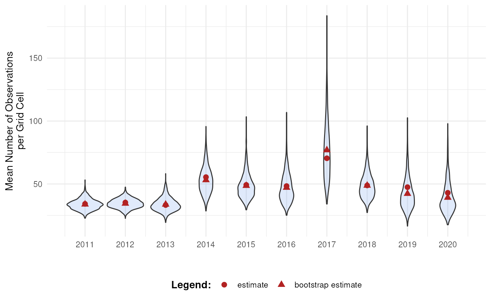

Bootstrap Method for Data Cubes
Source:vignettes/articles/bootstrap-method-cubes.Rmd
bootstrap-method-cubes.RmdIntroduction
When working with data cubes, it’s essential to understand the
uncertainty surrounding derived statistics. This tutorial introduces the
bootstrap_cube() function from dubicube,
which uses bootstrap resampling to estimate the variability, bias, and
standard error of estimates.
Bootstrapping for data cubes
Bootstrapping is a resampling method used to approximate the
distribution of a statistic by repeatedly sampling from the data with
replacement. In the context of biodiversity data cubes,
bootstrap_cube() enables us to assess the variability of
derived statistics, such as by computing confidence intervals.
Note that we also make a distinction between whole-cube bootstrapping and group-specific bootstrapping. This is further explained in this tutorial.
A data cube and a statistic
Consider a data cube \(\mathbf{X}\) from which we want to calculate a statistic \(\theta\).
-
Original Sample Data: \(\mathbf{X} = \{X_1, X_2, \ldots, X_n\}\)
- The initial set of data points. Here, \(n\) is the sample size. This corresponds to the number of cells in a data cube or the number of rows in tabular format.
-
Statistic of Interest: \(\theta\)
- The parameter or statistic being estimated, such as the mean \(\bar{X}\), variance \(\sigma^2\), or a biodiversity indicator. Let \(\hat{\theta}\) denote the estimated value of \(\theta\) calculated from the complete dataset \(\mathbf{X}\).
Resampling and recalculating
From \(\mathbf{X}\), multiple resampled datasets \(\mathbf{X}^*\) are created by sampling rows (cells) with replacement until each new dataset is equally large as \(\mathbf{X}\). This process is repeated \(B\) times, and each resample yields a new estimate \(\hat{\theta}^*_b\) of the statistic.
-
Bootstrap Sample: \(\mathbf{X}^* = \{X_1^*, X_2^*, \ldots,
X_n^*\}\)
- A sample of size \(n\) drawn with replacement from the original sample \(\mathbf{X}\). Each \(X_i^*\) is drawn independently from \(\mathbf{X}\).
- A total of \(B\) bootstrap samples are drawn from the original data. Common choices for \(B\) are 1000 or 10,000 to ensure a good approximation of the distribution of the bootstrap replications (see further).
-
Bootstrap Replication: \(\hat{\theta}^*_b\)
- The value of the statistic of interest calculated from the \(b\)-th bootstrap sample \(\mathbf{X}^*_b\). For example, if \(\theta\) is the sample mean, \(\hat{\theta}^*_b = \bar{X}^*_b\).
Derivation of bootstrap statistics
The set of bootstrap replications forms the bootstrap distribution, which can be used to estimate bootstrap statistics and construct confidence intervals (see the interval calculation tutorial).
-
Bootstrap Estimate of the Statistic: \(\hat{\theta}_{\text{boot}}\)
- The average of the bootstrap replications:
\[ \hat{\theta}_{\text{boot}} = \frac{1}{B} \sum_{b=1}^B \hat{\theta}^*_b \]
-
Bootstrap Bias: \(\text{Bias}_{\text{boot}}\)
- This bias indicates how much the bootstrap estimate deviates from the original sample estimate. It is calculated as the difference between the average bootstrap estimate and the original estimate:
\[ \text{Bias}_{\text{boot}} = \frac{1}{B} \sum_{b=1}^B (\hat{\theta}^*_b - \hat{\theta}) = \hat{\theta}_{\text{boot}} - \hat{\theta} \]
-
Bootstrap Standard Error: \(\text{SE}_{\text{boot}}\)
- The standard deviation of the bootstrap replications, which estimates the variability of the statistic.

Getting started with dubicube
The dubicube bootstrapping method can be used on any dataframe from which a statistic is calculated and a grouping variable is present. For this tutorial, we focus on occurrence cubes. Therefore, we will use the b3gbi package for processing the raw data before moving on to the bootstrapping.
# Load packages
library(ggplot2) # Data visualisation
library(dplyr) # Data wrangling
library(tidyr) # Data wrangling
# Data loading and processing
library(frictionless) # Load example datasets
library(b3gbi) # Process occurrence cubes
library(dubicube) # Analysis of data quality & indicator uncertaintyLoading and processing the data
We load the bird cube data from the b3data data package using frictionless (see also here). It is an occurrence cube for birds in Belgium between 2000 en 2024 using the MGRS grid at 10 km scale.
# Read data package
b3data_package <- read_package(
"https://zenodo.org/records/15211029/files/datapackage.json"
)
# Load bird cube data
bird_cube_belgium <- read_resource(b3data_package, "bird_cube_belgium_mgrs10")
head(bird_cube_belgium)
#> # A tibble: 6 × 8
#> year mgrscode specieskey species family n mincoordinateuncerta…¹
#> <dbl> <chr> <dbl> <chr> <chr> <dbl> <dbl>
#> 1 2000 31UDS65 2473958 Perdix perdix Phasi… 1 3536
#> 2 2000 31UDS65 2474156 Coturnix coturn… Phasi… 1 3536
#> 3 2000 31UDS65 2474377 Fulica atra Ralli… 5 1000
#> 4 2000 31UDS65 2475443 Merops apiaster Merop… 6 1000
#> 5 2000 31UDS65 2480242 Vanellus vanell… Chara… 1 3536
#> 6 2000 31UDS65 2480637 Accipiter nisus Accip… 1 3536
#> # ℹ abbreviated name: ¹mincoordinateuncertaintyinmeters
#> # ℹ 1 more variable: familycount <dbl>We process the cube with b3gbi. First, we select 2000 random rows to make the dataset smaller. This is to reduce the computation time for this tutorial. We select the data from 2011 - 2020.
set.seed(123)
# Make dataset smaller
rows <- sample(nrow(bird_cube_belgium), 2000)
bird_cube_belgium <- bird_cube_belgium[rows, ]
# Process cube
processed_cube <- process_cube(
bird_cube_belgium,
first_year = 2011,
last_year = 2020,
cols_occurrences = "n"
)
processed_cube
#>
#> Processed data cube for calculating biodiversity indicators
#>
#> Date Range: 2011 - 2020
#> Single-resolution cube with cell size 10km ^2
#> Number of cells: 242
#> Grid reference system: mgrs
#> Coordinate range:
#> xmin xmax ymin ymax
#> 280000 710000 5490000 5700000
#>
#> Total number of observations: 45143
#> Number of species represented: 253
#> Number of families represented: 57
#>
#> Kingdoms represented: Data not present
#>
#> First 10 rows of data (use n = to show more):
#>
#> # A tibble: 957 × 13
#> year cellCode taxonKey scientificName family obs minCoordinateUncerta…¹
#> <dbl> <chr> <dbl> <chr> <chr> <dbl> <dbl>
#> 1 2011 31UFS56 5231918 Cuculus canorus Cucul… 11 3536
#> 2 2011 31UES28 5739317 Phoenicurus phoe… Musci… 6 3536
#> 3 2011 31UFS64 6065824 Chroicocephalus … Larid… 143 1000
#> 4 2011 31UFS96 2492576 Muscicapa striata Musci… 3 3536
#> 5 2011 31UES04 5231198 Passer montanus Passe… 1 3536
#> 6 2011 31UES85 5229493 Garrulus glandar… Corvi… 23 707
#> 7 2011 31UES88 10124612 Anser anser x Br… Anati… 1 100
#> 8 2011 31UES22 2481172 Larus marinus Larid… 8 1000
#> 9 2011 31UFS43 2481139 Larus argentatus Larid… 10 3536
#> 10 2011 31UFT00 9274012 Spatula querqued… Anati… 8 3536
#> # ℹ 947 more rows
#> # ℹ abbreviated name: ¹minCoordinateUncertaintyInMeters
#> # ℹ 6 more variables: familyCount <dbl>, xcoord <dbl>, ycoord <dbl>,
#> # utmzone <int>, hemisphere <chr>, resolution <chr>Analysis of the data
Let’s say we are interested in the mean number of observations per grid cell per year. We create a function to calculate this.
# Function to calculate the statistic of interest
# Mean observations per grid cell per year
mean_obs <- function(data) {
obs <- x <- NULL
data %>%
dplyr::mutate(x = mean(obs), .by = "cellCode") %>%
dplyr::summarise(diversity_val = mean(x), .by = "year") %>%
as.data.frame()
}We get the following results:
mean_obs(processed_cube$data)
#> year diversity_val
#> 1 2011 34.17777
#> 2 2012 35.27201
#> 3 2013 33.25581
#> 4 2014 55.44160
#> 5 2015 49.24754
#> 6 2016 48.34063
#> 7 2017 70.42202
#> 8 2018 48.83850
#> 9 2019 47.46795
#> 10 2020 43.00411On their own, these values don’t reveal how much uncertainty surrounds them. To better understand their variability, we use bootstrapping to estimate the distribution of the yearly means.
Bootstrapping
We use the bootstrap_cube() function to do this. It
relies on the following arguments:
data_cube:
The input data as a processed data cube (fromb3gbi::process_cube()).fun:
A user-defined function that computes the statistic(s) of interest fromdata_cube$data. This function should return a dataframe that includes a column nameddiversity_val, containing the statistic to evaluate.grouping_var:
The column(s) used for grouping the output offun(). For example, iffun()returns one value per year, usegrouping_var = "year".samples:
The number of bootstrap samples to draw. Common values are 1000 or more for reliable estimates of variability and confidence intervals.seed:
An optional numeric seed to ensure reproducibility of the bootstrap resampling. Set this to a fixed value to get consistent results across runs.progress:
Logical flag to show a progress bar. Set toTRUEto enable progress reporting; default isFALSE.
bootstrap_results <- bootstrap_cube(
data_cube = processed_cube,
fun = mean_obs,
grouping_var = "year",
samples = 1000,
seed = 123
)
#> [1] "Performing whole-cube bootstrap with `boot::boot()`."This returned a list of "boot" objects. We can convert
this to a dataframe
bootstrap_results_df <- boot_list_to_dataframe(
boot_list = bootstrap_results,
grouping_var = "year"
) %>%
mutate(year = as.numeric(year))
head(bootstrap_results_df)
#> sample year est_original rep_boot est_boot se_boot bias_boot
#> 1 1 2011 34.17777 31.15094 33.7093 4.304673 -0.4684721
#> 2 2 2011 34.17777 32.45489 33.7093 4.304673 -0.4684721
#> 3 3 2011 34.17777 29.31098 33.7093 4.304673 -0.4684721
#> 4 4 2011 34.17777 34.10232 33.7093 4.304673 -0.4684721
#> 5 5 2011 34.17777 25.46354 33.7093 4.304673 -0.4684721
#> 6 6 2011 34.17777 33.85088 33.7093 4.304673 -0.4684721We can visualise the bootstrap distributions using a violin plot.
# Get bias vales
bias_mean_obs <- bootstrap_results_df %>%
distinct(year, estimate = est_original, `bootstrap estimate` = est_boot)
# Get estimate values
estimate_mean_obs <- bias_mean_obs %>%
pivot_longer(cols = c("estimate", "bootstrap estimate"),
names_to = "Legend", values_to = "value") %>%
mutate(Legend = factor(Legend, levels = c("estimate", "bootstrap estimate"),
ordered = TRUE))
# Visualise bootrap distributions
bootstrap_results_df %>%
ggplot(aes(x = year)) +
# Distribution
geom_violin(aes(y = rep_boot, group = year),
fill = alpha("cornflowerblue", 0.2)) +
# Estimates and bias
geom_point(data = estimate_mean_obs, aes(y = value, shape = Legend),
colour = "firebrick", size = 2.5) +
# Settings
labs(y = "Mean Number of Observations\nper Grid Cell",
x = "", shape = "Legend:") +
scale_x_continuous(breaks = sort(unique(bootstrap_results_df$year))) +
theme_minimal() +
theme(legend.position = "bottom",
legend.title = element_text(face = "bold"))
Advanced usage of bootstrap_cube()
Bootstrap simple dataframes
As stated in the documentation, it is also possible to bootstrap a
dataframe. In this case, set the argument
processed_cube = FALSE. This is implemented to allow for
flexible use of simple dataframes, while still encouraging the use of
b3gbi::process_cube() as default functionality.
bootstrap_results_df <- bootstrap_cube(
data_cube = processed_cube$data, # data.frame object
fun = mean_obs,
grouping_var = "year",
samples = 1000,
method = "whole_cube",
seed = 123,
processed_cube = FALSE
)Comparison with a reference group
A particularly insightful approach is comparing indicator values to a reference group. In time series analyses, this often means comparing each year’s indicator to a baseline year (e.g., the first or last year in the series).
To do this, we perform bootstrapping over the differences between indicator values:
- Resample the dataset with replacement
- Calculate the indicator for each group (e.g., each year)
- For each non-reference group, compute the difference between its
indicator value and that of the reference group
- Repeat steps 1–3 across all bootstrap iterations
This process yields bootstrap replicate distributions of differences in indicator values.
bootstrap_results_ref <- bootstrap_cube(
data_cube = processed_cube,
fun = mean_obs,
grouping_var = "year",
samples = 1000,
ref_group = 2011,
seed = 123
)
#> [1] "Performing whole-cube bootstrap."This time, a dataframe is returned since the boot package cannot be used with a reference group (see Bootstrap method section).
head(bootstrap_results_ref)
#> sample year est_original rep_boot est_boot se_boot bias_boot
#> 1 1 2012 1.094245 8.1881078 0.6583191 5.475053 -0.4359261
#> 2 2 2012 1.094245 7.6061946 0.6583191 5.475053 -0.4359261
#> 3 3 2012 1.094245 -4.6058908 0.6583191 5.475053 -0.4359261
#> 4 4 2012 1.094245 2.4102039 0.6583191 5.475053 -0.4359261
#> 5 5 2012 1.094245 6.2626545 0.6583191 5.475053 -0.4359261
#> 6 6 2012 1.094245 -0.1577162 0.6583191 5.475053 -0.4359261We see that the mean number of observations is higher in most years compared to 2011. At what point can we say these differences are significant? This will be further explored in the effect classification tutorial.
# Get bias vales
bias_mean_obs <- bootstrap_results_ref %>%
distinct(year, estimate = est_original, `bootstrap estimate` = est_boot)
# Get estimate values
estimate_mean_obs <- bias_mean_obs %>%
pivot_longer(cols = c("estimate", "bootstrap estimate"),
names_to = "Legend", values_to = "value") %>%
mutate(Legend = factor(Legend, levels = c("estimate", "bootstrap estimate"),
ordered = TRUE))
# Visualise bootrap distributions
bootstrap_results_ref %>%
ggplot(aes(x = year)) +
# Distribution
geom_violin(aes(y = rep_boot, group = year),
fill = alpha("cornflowerblue", 0.2)) +
# Estimates and bias
geom_point(data = estimate_mean_obs, aes(y = value, shape = Legend),
colour = "firebrick", size = 2) +
# Settings
labs(y = "Mean Number of Observations per Grid Cell\nCompared to 2011",
x = "", shape = "Legend:") +
scale_x_continuous(breaks = sort(unique(bootstrap_results_ref$year))) +
theme_minimal() +
theme(legend.position = "bottom",
legend.title = element_text(face = "bold"))
Note that the choice of the reference year should be well considered. Keep in mind which comparisons should be made, and what the motivation is behind the reference period. A high or low value in the reference period relative to other periods, e.g. an exceptional bad or good year, can affect the magnitude and direction of the calculated differences. Whether this should be avoided or not, depends on the motivation behind the choice and the research question. A reference period can be determined by legislation, or by the start of a monitoring campaign. A specific research question can determine the periods that need to be compared. Furthermore, the variability of the estimate of reference period affects the width of confidence intervals for the differences. A more variable reference period will propagate greater uncertainty. In the case of GBIF data, more data will be available in recent years than in earlier years. If this is the case, it could make sense to select the last period as a reference period. In a way, this also avoids the arbitrariness of choosing the reference period. You compare previous situations with the current situation (last year), where you could repeat this comparison annually, for example. Finally, when comparing multiple indicators, we recommend using a consistent reference period to maintain comparability.
Bootstrap method
The dubicube package supports multiple bootstrap
strategies depending on the type of indicator, the structure of your
data, and whether a reference group is used. Users rarely need to
specify the method explicitly, as the default
method = "smart" automatically selects the appropriate
approach. More info in this
tutorial.
1. Smart (method = "smart")
This is the default and recommended option. dubicube infers the most suitable bootstrap method by comparing indicator values across subsets of the data. If the values of common groups are identical when calculated separately, group-specific bootstrapping is applied; otherwise, whole-cube bootstrapping is used (see further).
2. Whole-cube bootstrap (method = "whole_cube")
In whole-cube bootstrapping, resampling is performed across all rows of the dataset, ignoring the grouping variable. This is suitable for indicators that depend on the full dataset (e.g., aggregate biodiversity metrics).
- Can be used with a reference group.
- Does not use the boot package.
3. Group-specific bootstrap
(method = "group_specific")
Here, resampling occurs independently within each group defined by the grouping variable (e.g., per species, year, or habitat). This method preserves group structure and is suitable for indicators calculated independently per group.
- Can be used with a reference group.
- Does not use the boot package.